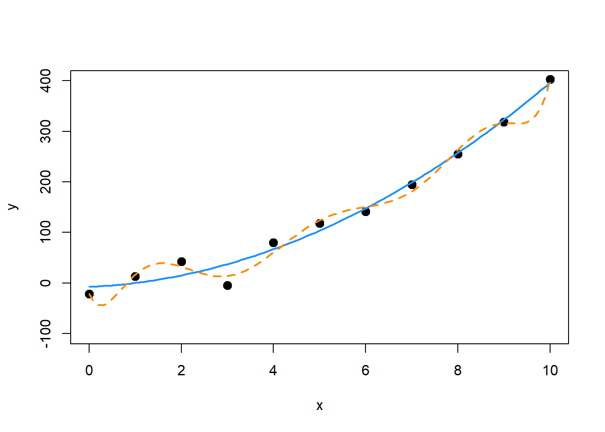
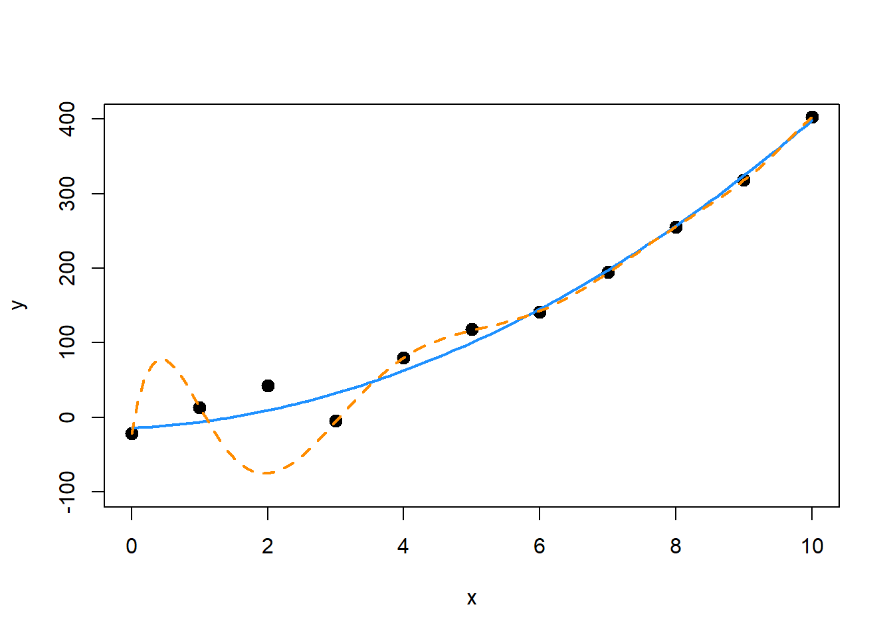
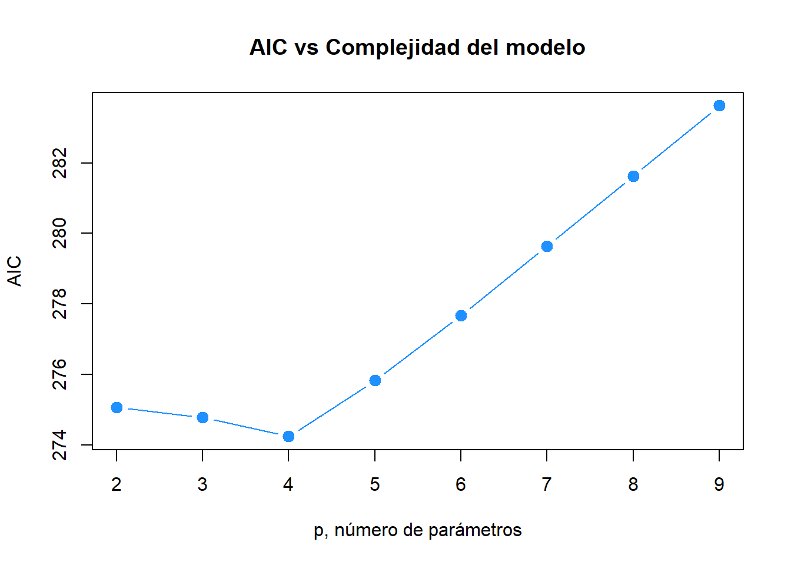
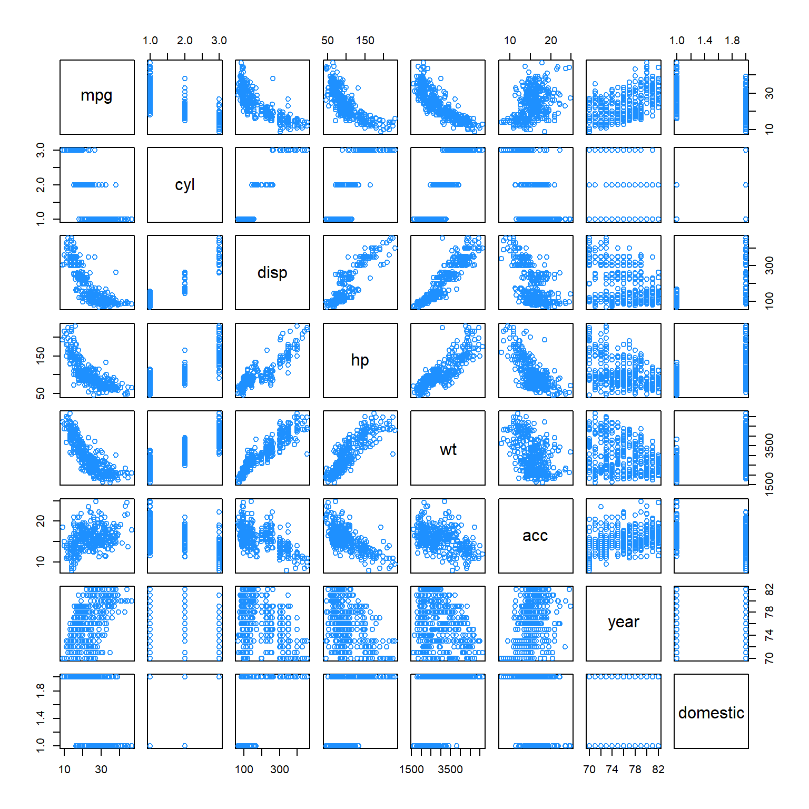
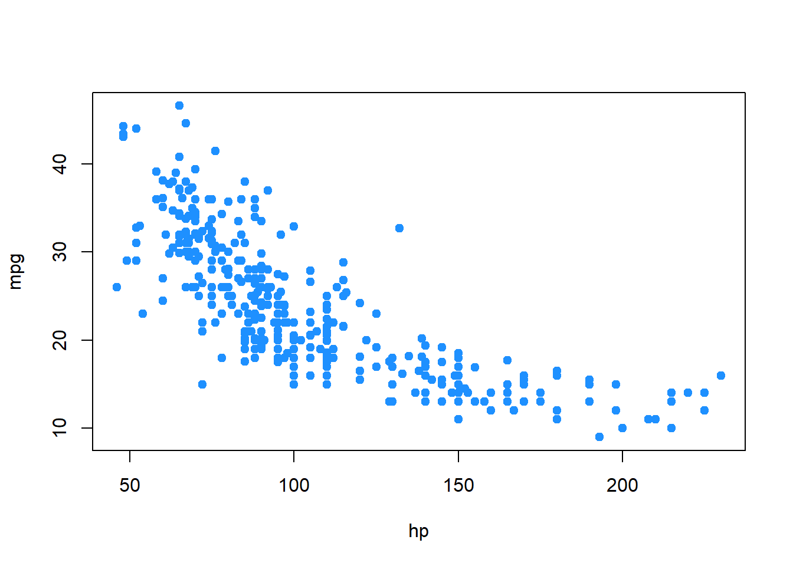

Capítulo 16 Selección de variables y construcción de modelos
“Elige bien. Tu elección es breve y, sin embargo, interminable.”
— Johann Wolfgang von Goethe
Después de leer este capítulo, podrá:
- Comprender el equilibrio entre bondad de ajuste y complejidad del modelo.
- Utilizar procedimientos de selección de variables para encontrar un buen modelo a partir de un conjunto de modelos posibles.
- Comprender los dos usos de los modelos: explicación y predicción.
En el capítulo anterior vimos cómo la correlación entre las variables predictoras puede tener efectos indeseables en los modelos. Usamos factores de inflación de la varianza para evaluar la gravedad de los problemas de colinealidad causados por estas correlaciones. También vimos cómo ajustar un modelo más pequeño, dejando de lado algunos de los predictores correlacionados, da como resultado un modelo que ya no sufre problemas de colinealidad. Pero, ¿cómo elegir este modelo más pequeño?
En este capítulo, discutiremos varios criterios y procedimientos para elegir un modelo “bueno” de entre muchos.
16.1 Criterio de calidad
Hasta ahora, hemos visto criterios como el \(R^2\) y \(\text{RMSE}\) para evaluar la calidad de ajuste. Sin embargo, ambos tienen un defecto fatal. Al aumentar el tamaño de un modelo, se agregan predictores que, en el peor de los casos, no pueden mejorar. Es imposible agregar un predictor a un modelo y empeorar el \(R^2\) o \(\text{RMSE}\). Eso significa que, si usáramos cualquiera de estos para elegir entre modelos, siempre simplemente elegiríamos el modelo más grande. Con el tiempo, simplemente estaríamos adaptados al ruido.
Esto sugiere que necesitamos un criterio de calidad que tenga en cuenta el tamaño del modelo, ya que nuestra preferencia es por modelos pequeños que encajan bien. Estamos dispuestos a sacrificar una pequeña cantidad de “bondad de ajuste” para obtener un modelo más pequeño. (Aquí usamos “bondad de ajuste” para significar simplemente qué tan lejos están los datos del modelo, cuanto más pequeños sean los errores, mejor. A menudo, en la estadística, bondad de ajuste puede tener un significado más preciso), en tres criterios que hacen esto explícitamente: \(\text{AIC}\), \(\text{BIC}\) y \(R^2\) ajustados. También veremos uno, \(\text{RMSE}\) con validación cruzada, que considera implícitamente el tamaño del modelo.
16.1.1 Criterio de información de Akaike
El primer criterio que discutiremos es el Criterio de información de Akaike, o \(\text{AIC}\) para abreviar. (Tenga en cuenta que, cuando Akaike introdujo por primera vez esta métrica, simplemente se llamó Un Criterio de información.
Recuerde, la log-verosimilitud maximizada de un modelo de regresión se puede escribir como
\[ \log L(\boldsymbol{\hat{\beta}}, \hat{\sigma}^2) = -\frac{n}{2}\log(2\pi) - \frac{n}{2}\log\left(\frac{\text{RSS}}{n}\right) - \frac{n}{2}, \]
donde \(\text{RSS} = \sum_{i=1}^n (y_i - \hat{y}_i) ^ 2\), \(\boldsymbol{\hat{\beta}}\) y \(\hat{\sigma}^2\) fueron elegidos para maximizar la verosimilitud.
Entonces podemos definir \(\text{AIC}\) como
\[ \text{AIC} = -2 \log L(\boldsymbol{\hat{\beta}}, \hat{\sigma}^2) + 2p = n + n \log(2\pi) + n \log\left(\frac{\text{RSS}}{n}\right) + 2p, \]
que es una medida de calidad del modelo. Cuanto menor sea el \(\text{AIC}\), mejor. Para ver por qué, hablemos de los dos componentes principales de \(\text{AIC}\), la verosimilitud (que mide la “bondad de ajuste”) y la penalización (que es una función de el tamaño del modelo).
La parte de verosimilitud de \(\text{AIC}\) es dada por
\[ -2 \log L(\boldsymbol{\hat{\beta}}, \hat{\sigma}^2) = n + n \log(2\pi) + n \log\left(\frac{\text{RSS}}{n}\right). \]
Para comparar modelos, el único término que cambiará es \(n \log\left(\frac{\text{RSS}}{n}\right)\), que es función de \(\text{RSS}\).
\[ n + n \log(2\pi) \]
los términos serán constantes en todos los modelos aplicados a los mismos datos. Entonces, cuando un modelo se ajusta bien, es decir, tiene un \(\text{RSS}\) bajo, entonces este componente de verosimilitud será pequeño.
De manera similar, podemos discutir el componente de penalización de \(\text{AIC}\) que es,
\[ 2p, \]
donde \(p\) es el número de parámetros \(\beta\) en el modelo. A esto lo llamamos penalización, porque es grande cuando \(p\) es grande, pero buscamos encontrar un \(\text{AIC}\) pequeño.
Por lo tanto, un buen modelo, es decir, uno con un \(\text{AIC}\) pequeño, tendrá un buen equilibrio entre un buen ajuste y el uso de una pequeña cantidad de parámetros. Para comparar modelos
\[ \text{AIC} = n\log\left(\frac{\text{RSS}}{n}\right) + 2p \]
es una expresión suficiente, ya que \(n + n \log(2\pi)\) es el mismo en todos los modelos para cualquier conjunto de datos en particular.
16.1.2 Criterio de información Bayesiano
El criterio de información Bayesiano, o \(\text{BIC}\), es similar a \(\text{AIC}\), pero tiene una penalización mayor. \(\text{BIC}\) también cuantifica la compensación entre un modelo que se ajusta bien y el número de parámetros del modelo, sin embargo, para un tamaño de muestra razonable, generalmente elige un modelo más pequeño que \(\text{AIC}\). Nuevamente, para la selección del modelo, use el modelo con el \(\text{BIC}\) más pequeño.
\[ \text{BIC} = -2 \log L(\boldsymbol{\hat{\beta}}, \hat{\sigma}^2) + \log(n) p = n + n\log(2\pi) + n\log\left(\frac{\text{RSS}}{n}\right) + \log(n)p. \]
Observe que la penalización de \(\text{AIC}\) fue
\[ 2p, \]
mientras que para \(\text{BIC}\), la penalización es
\[ \log(n) p. \]
Entonces, para cualquier conjunto de datos donde \(log(n)> 2\), la penalización de \(\text{BIC}\) será mayor que la penalización de \(\text{AIC}\), por lo que \(\text{BIC}\) probablemente preferirá un modelo pequeño.
Tenga en cuenta que, a veces, la penalización se considera una expresión general de la forma
\[ k \cdot p. \]
Entonces, para \(\text{AIC}\) \(k=2\), y para \(\text{BIC}\) \(k=\log(n)\).
Para comparar modelos
\[ \text{BIC} = n\log\left(\frac{\text{RSS}}{n}\right) + \log(n)p \]
es nuevamente una expresión suficiente, ya que \(n + n \log(2\pi)\) es el mismo en todos los modelos para cualquier conjunto de datos en particular.
16.1.3 R cuadrado ajustado
Recordemos que,
\[ R^2 = 1 - \frac{\text{SSE}}{\text{SST}} = 1 - \frac{\sum_{i=1}^{n}(y_i - \hat{y}_i)^2}{\sum_{i=1}^{n}(y_i - \bar{y})^2}. \]
Ahora definimos
\[ R_a^2 = 1 - \frac{\text{SSE}/(n-p)}{\text{SST}/(n-1)} = 1 - \left( \frac{n-1}{n-p} \right)(1-R^2) \]
Lo que llamamos el \(R^2\) ajustado.
A diferencia del \(R^2\), que nunca puede reducirse con predictores agregados, el \(R^2\) ajustado penaliza efectivamente los predictores adicionales y puede disminuir con predictores adicionales. Al igual que el \(R^2\), cuanto más grande, mejor.
16.1.4 RMSE con validación cruzada
Cada una de las tres métricas anteriores utilizó explícitamente \(p\), el número de parámetros, en sus cálculos. Por lo tanto, todos ellos limitan explícitamente el tamaño de los modelos elegidos cuando se utilizan para comparar modelos.
Ahora presentaremos brevemente sobreajuste y validación cruzada.
make_poly_data = function(sample_size = 11) {
x = seq(0, 10)
y = 3 + x + 4 * x ^ 2 + rnorm(n = sample_size, mean = 0, sd = 20)
data.frame(x, y)
}set.seed(1234)
poly_data = make_poly_data()Aquí hemos generado datos donde la media de \(Y\) es una función cuadrática de un solo predictor \(x\), específicamente,
\[ Y = 3 + x + 4 x ^ 2 + \epsilon. \]
Ahora ajustaremos dos modelos a estos datos, uno que tiene la forma correcta, cuadrática, y otro que es grande, que incluye términos hasta un octavo grado inclusive.
fit_quad = lm(y ~ poly(x, degree = 2), data = poly_data)
fit_big = lm(y ~ poly(x, degree = 8), data = poly_data)Luego graficamos los datos y los resultados de los dos modelos.
plot(y ~ x, data = poly_data, ylim = c(-100, 400), cex = 2, pch = 20)
xplot = seq(0, 10, by = 0.1)
lines(xplot, predict(fit_quad, newdata = data.frame(x = xplot)),
col = "dodgerblue", lwd = 2, lty = 1)
lines(xplot, predict(fit_big, newdata = data.frame(x = xplot)),
col = "darkorange", lwd = 2, lty = 2)
Podemos ver que la curva azul sólida modela estos datos bastante bien. La curva naranja discontinua se ajusta mejor a los puntos y comete errores más pequeños; sin embargo, es poco probable que esté modelando correctamente la verdadera relación entre \(x\) y \(y\). Se ajusta al ruido aleatorio. Este es un ejemplo de sobreajuste.
Vemos que el modelo más grande de hecho tiene un menor \(\text{RMSE}\).
sqrt(mean(resid(fit_quad) ^ 2))## [1] 17.61812sqrt(mean(resid(fit_big) ^ 2))## [1] 10.4197Para corregir esto, introduciremos la validación cruzada. Definimos el RMSE de validación cruzada leave-one-out como
\[ \text{RMSE}_{\text{LOOCV}} = \sqrt{\frac{1}{n} \sum_{i=1}^n e_{[i]}^2}. \]
Los \(e_{[i]}\) son el residuo de la \(i\)-ésima observación, cuando esa observación no se utiliza para ajustar el modelo.
\[ e_{[i]} = y_{i} - \hat{y}_{[i]} \]
Es decir, el valor ajustado se calcula como
\[ \hat{y}_{[i]} = \boldsymbol{x}_i ^ \top \hat{\beta}_{[i]} \]
donde \(\hat{\beta}_{[i]}\) son los coeficientes estimados cuando la \(i\)-ésima observación se elimina del conjunto de datos.
En general, para realizar este cálculo, tendríamos que ajustar el modelo \(n\) veces, una vez con cada posible observación eliminada. Sin embargo, para modelos lineales y de validación cruzada leave-one-out, la ecuación se puede reescribir como
\[ \text{RMSE}_{\text{LOOCV}} = \sqrt{\frac{1}{n}\sum_{i=1}^n \left(\frac{e_{i}}{1-h_{i}}\right)^2}, \]
donde \(h_i\) son los apalancamientos y \(e_i\) son los residuos habituales. ¡Esto es genial, porque ahora podemos obtener LOOCV \(\text{RMSE}\) ajustando solo un modelo! En la práctica, la validación cruzada de 5 o 10 veces es mucho más popular. Por ejemplo, en la validación cruzada de 5 veces, el modelo se ajusta 5 veces, cada vez se omite una quinta parte de los datos y luego se predice sobre esos valores. Dejaremos el examen en profundidad de la validación cruzada a un curso de aprendizaje automático y simplemente usaremos LOOCV aquí.
Calculemos LOOCV \(\text{RMSE}\) para ambos modelos, luego analicemos por qué queremos hacerlo. Primero escribimos una función que calcula LOOCV \(\text{RMSE}\) como se define usando la fórmula de acceso directo para modelos lineales.
calc_loocv_rmse = function(model) {
sqrt(mean((resid(model) / (1 - hatvalues(model))) ^ 2))
}Luego calcule la métrica para ambos modelos.
calc_loocv_rmse(fit_quad)## [1] 23.57189calc_loocv_rmse(fit_big)## [1] 1334.357Ahora vemos que el modelo cuadrático tiene un LOOCV \(\text{RMSE}\) mucho más pequeño, por lo que preferiríamos este modelo. Esto se debe a que el modelo grande ha sobreajustado gravemente los datos. Al dejar un solo punto de datos y ajustar el modelo grande, el ajuste resultante es muy diferente al ajuste utilizando todos los datos. Por ejemplo, dejemos fuera el tercer punto de datos y ajustemos ambos modelos, luego tracemos el resultado.
fit_quad_removed = lm(y ~ poly(x, degree = 2), data = poly_data[-3, ])
fit_big_removed = lm(y ~ poly(x, degree = 8), data = poly_data[-3, ])
plot(y ~ x, data = poly_data, ylim = c(-100, 400), cex = 2, pch = 20)
xplot = seq(0, 10, by = 0.1)
lines(xplot, predict(fit_quad_removed, newdata = data.frame(x = xplot)),
col = "dodgerblue", lwd = 2, lty = 1)
lines(xplot, predict(fit_big_removed, newdata = data.frame(x = xplot)),
col = "darkorange", lwd = 2, lty = 2)
Vemos que, en promedio, la línea azul sólida para el modelo cuadrático tiene errores similares a los de antes. Ha cambiado muy levemente. Sin embargo, la línea naranja discontinua para el modelo grande tiene un gran error en el punto que se eliminó y es muy diferente al ajuste anterior.
Este es el propósito de la validación cruzada. Al evaluar cómo el modelo se ajusta a los puntos que no se utilizaron para realizar la regresión, tenemos una idea de qué tan bien funcionará el modelo para las observaciones futuras. Evalúa qué tan bien funciona el modelo en general, no simplemente en los datos observados.
16.2 Procedimientos de selección
Ahora hemos visto una serie de criterios de calidad del modelo, pero ahora debemos abordar qué modelos considerar. La selección del modelo implica tanto un criterio de calidad como un procedimiento de búsqueda.
library(faraway)
hipcenter_mod = lm(hipcenter ~ ., data = seatpos)
coef(hipcenter_mod)## (Intercept) Age Weight HtShoes Ht Seated
## 436.43212823 0.77571620 0.02631308 -2.69240774 0.60134458 0.53375170
## Arm Thigh Leg
## -1.32806864 -1.14311888 -6.43904627Regresemos a los datos de seatpos del paquete faraway. Ahora, consideremos solo modelos con términos de primer orden, por lo tanto, sin interacciones ni polinomios. Hay ocho predictores en este modelo. Entonces, si consideramos todos los modelos posibles, que van desde el uso de 0 predictores hasta los ocho predictores, hay
\[ \sum_{k = 0}^{p - 1} {{p - 1} \choose {k}} = 2 ^ {p - 1} = 2 ^ 8 = 256 \]
posibles modelos.
Si tuviéramos 10 o más predictores, ¡ya estaríamos considerando más de 1000 modelos! Por esta razón, a menudo buscamos a través de posibles modelos de una manera inteligente, pasando por alto algunos modelos que es poco probable que se consideren buenos. Consideraremos tres procedimientos de búsqueda: hacia atrás, hacia adelante y paso a paso.
16.2.1 Búsqueda hacia atrás (Backward)
Los procedimientos de selección hacia atrás comienzan con todos los posibles predictores en el modelo, luego consideran cómo la eliminación de un solo predictor afectará una métrica elegida. Probemos esto con los datos seatpos. Usaremos la función step() en R que por defecto usa \(\text{AIC}\) como su métrica de elección.
hipcenter_mod_back_aic = step(hipcenter_mod, direction = "backward")## Start: AIC=283.62
## hipcenter ~ Age + Weight + HtShoes + Ht + Seated + Arm + Thigh +
## Leg
##
## Df Sum of Sq RSS AIC
## - Ht 1 5.01 41267 281.63
## - Weight 1 8.99 41271 281.63
## - Seated 1 28.64 41290 281.65
## - HtShoes 1 108.43 41370 281.72
## - Arm 1 164.97 41427 281.78
## - Thigh 1 262.76 41525 281.87
## <none> 41262 283.62
## - Age 1 2632.12 43894 283.97
## - Leg 1 2654.85 43917 283.99
##
## Step: AIC=281.63
## hipcenter ~ Age + Weight + HtShoes + Seated + Arm + Thigh + Leg
##
## Df Sum of Sq RSS AIC
## - Weight 1 11.10 41278 279.64
## - Seated 1 30.52 41297 279.66
## - Arm 1 160.50 41427 279.78
## - Thigh 1 269.08 41536 279.88
## - HtShoes 1 971.84 42239 280.51
## <none> 41267 281.63
## - Leg 1 2664.65 43931 282.01
## - Age 1 2808.52 44075 282.13
##
## Step: AIC=279.64
## hipcenter ~ Age + HtShoes + Seated + Arm + Thigh + Leg
##
## Df Sum of Sq RSS AIC
## - Seated 1 35.10 41313 277.67
## - Arm 1 156.47 41434 277.78
## - Thigh 1 285.16 41563 277.90
## - HtShoes 1 975.48 42253 278.53
## <none> 41278 279.64
## - Leg 1 2661.39 43939 280.01
## - Age 1 3011.86 44290 280.31
##
## Step: AIC=277.67
## hipcenter ~ Age + HtShoes + Arm + Thigh + Leg
##
## Df Sum of Sq RSS AIC
## - Arm 1 172.02 41485 275.83
## - Thigh 1 344.61 41658 275.99
## - HtShoes 1 1853.43 43166 277.34
## <none> 41313 277.67
## - Leg 1 2871.07 44184 278.22
## - Age 1 2976.77 44290 278.31
##
## Step: AIC=275.83
## hipcenter ~ Age + HtShoes + Thigh + Leg
##
## Df Sum of Sq RSS AIC
## - Thigh 1 472.8 41958 274.26
## <none> 41485 275.83
## - HtShoes 1 2340.7 43826 275.92
## - Age 1 3501.0 44986 276.91
## - Leg 1 3591.7 45077 276.98
##
## Step: AIC=274.26
## hipcenter ~ Age + HtShoes + Leg
##
## Df Sum of Sq RSS AIC
## <none> 41958 274.26
## - Age 1 3108.8 45067 274.98
## - Leg 1 3476.3 45434 275.28
## - HtShoes 1 4218.6 46176 275.90Comenzamos con el modelo hipcenter ~ ., que también se conoce como hipcenter ~ Age + Weight + HtShoes + Ht + Seated + Arm + Thigh + Leg. R intentará repetidamente eliminar un predictor hasta que se detenga o llegue al modelo hipcenter ~ 1, que no contiene predictores.
En cada “paso”, R informa el modelo actual, su \(\text{AIC}\), y los posibles pasos con su \(\text{RSS}\) y, lo que es más importante, \(\text{AIC}\).
En este ejemplo, en el primer paso, el modelo actual es hipcenter ~ Age + Weight + HtShoes + Ht + Seated + Arm + Thigh + Leg que tiene un AIC de 283.62. Tenga en cuenta que cuando R está calculando este valor, está usando extractAIC(), que usa la expresión
\[ \text{AIC} = n\log\left(\frac{\text{RSS}}{n}\right) + 2p, \]
Lo que verificamos rápidamente.
extractAIC(hipcenter_mod) # devuelve p y AIC## [1] 9.000 283.624n = length(resid(hipcenter_mod))
(p = length(coef(hipcenter_mod)))## [1] 9n * log(mean(resid(hipcenter_mod) ^ 2)) + 2 * p## [1] 283.624Volviendo al primer paso, R nos da una fila que muestra el efecto de eliminar cada uno de los predictores actuales. Los signos - al principio de cada fila indican que estamos considerando eliminar un predictor. También hay una fila con <none> que es una fila para mantener el modelo actual. Observe que esta fila tiene el \(\text{RSS}\) más pequeño, ya que es el modelo más grande.
Vemos que cada fila arriba de <none> tiene un \(\text{AIC}\) más pequeño que la fila de <none> con el que está en la parte superior, Ht, dando el \(\text{AIC}\) más bajo. Por lo tanto, eliminamos Ht del modelo y continuamos el proceso.
Observe que, en el segundo paso, comenzamos con el modelo hipcenter ~ Age + Weight + HtShoes + Seated + Arm + Thigh + Leg y la variable Ht ya no se considera.
Continuamos el proceso hasta llegar al modelo hipcenter ~ Age + HtShoes + Leg. En este paso, la fila para <none> encabeza la lista, ya que eliminar cualquier variable adicional no mejorará el \(\text{AIC}\). Este es el modelo que está almacenado en hipcenter_mod_back_aic.
coef(hipcenter_mod_back_aic)## (Intercept) Age HtShoes Leg
## 456.2136538 0.5998327 -2.3022555 -6.8297461También podríamos buscar a través de los posibles modelos hacia atrás usando \(\text{BIC}\). Para hacerlo, usamos nuevamente la función step(), pero ahora especificamos k = log(n), donde n almacena el número de observaciones en los datos.
n = length(resid(hipcenter_mod))
hipcenter_mod_back_bic = step(hipcenter_mod, direction = "backward", k = log(n))## Start: AIC=298.36
## hipcenter ~ Age + Weight + HtShoes + Ht + Seated + Arm + Thigh +
## Leg
##
## Df Sum of Sq RSS AIC
## - Ht 1 5.01 41267 294.73
## - Weight 1 8.99 41271 294.73
## - Seated 1 28.64 41290 294.75
## - HtShoes 1 108.43 41370 294.82
## - Arm 1 164.97 41427 294.88
## - Thigh 1 262.76 41525 294.97
## - Age 1 2632.12 43894 297.07
## - Leg 1 2654.85 43917 297.09
## <none> 41262 298.36
##
## Step: AIC=294.73
## hipcenter ~ Age + Weight + HtShoes + Seated + Arm + Thigh + Leg
##
## Df Sum of Sq RSS AIC
## - Weight 1 11.10 41278 291.10
## - Seated 1 30.52 41297 291.12
## - Arm 1 160.50 41427 291.24
## - Thigh 1 269.08 41536 291.34
## - HtShoes 1 971.84 42239 291.98
## - Leg 1 2664.65 43931 293.47
## - Age 1 2808.52 44075 293.59
## <none> 41267 294.73
##
## Step: AIC=291.1
## hipcenter ~ Age + HtShoes + Seated + Arm + Thigh + Leg
##
## Df Sum of Sq RSS AIC
## - Seated 1 35.10 41313 287.50
## - Arm 1 156.47 41434 287.61
## - Thigh 1 285.16 41563 287.73
## - HtShoes 1 975.48 42253 288.35
## - Leg 1 2661.39 43939 289.84
## - Age 1 3011.86 44290 290.14
## <none> 41278 291.10
##
## Step: AIC=287.5
## hipcenter ~ Age + HtShoes + Arm + Thigh + Leg
##
## Df Sum of Sq RSS AIC
## - Arm 1 172.02 41485 284.02
## - Thigh 1 344.61 41658 284.18
## - HtShoes 1 1853.43 43166 285.53
## - Leg 1 2871.07 44184 286.41
## - Age 1 2976.77 44290 286.50
## <none> 41313 287.50
##
## Step: AIC=284.02
## hipcenter ~ Age + HtShoes + Thigh + Leg
##
## Df Sum of Sq RSS AIC
## - Thigh 1 472.8 41958 280.81
## - HtShoes 1 2340.7 43826 282.46
## - Age 1 3501.0 44986 283.46
## - Leg 1 3591.7 45077 283.54
## <none> 41485 284.02
##
## Step: AIC=280.81
## hipcenter ~ Age + HtShoes + Leg
##
## Df Sum of Sq RSS AIC
## - Age 1 3108.8 45067 279.89
## - Leg 1 3476.3 45434 280.20
## <none> 41958 280.81
## - HtShoes 1 4218.6 46176 280.81
##
## Step: AIC=279.89
## hipcenter ~ HtShoes + Leg
##
## Df Sum of Sq RSS AIC
## - Leg 1 3038.8 48105 278.73
## <none> 45067 279.89
## - HtShoes 1 5004.4 50071 280.25
##
## Step: AIC=278.73
## hipcenter ~ HtShoes
##
## Df Sum of Sq RSS AIC
## <none> 48105 278.73
## - HtShoes 1 83534 131639 313.35El procedimiento es exactamente el mismo, excepto que en cada paso buscamos mejorar \(\text{BIC}\), que R todavía etiqueta \(\text{AIC}\) en la salida.
La variable hipcenter_mod_back_bic almacena el modelo elegido por este procedimiento.
coef(hipcenter_mod_back_bic)## (Intercept) HtShoes
## 565.592659 -4.262091Observamos que este modelo es más pequeño, tiene menos predictores, que el modelo elegido por \(\text{AIC}\), que es lo que esperaríamos. También tenga en cuenta que si bien ambos modelos son diferentes, ninguno usa tanto Ht como HtShoes, que están extremadamente correlacionados.
Podemos usar información de la función summary() para comparar sus valores \(R^2\) ajustados. Tenga en cuenta que cualquiera de los modelos seleccionados funciona mejor que el modelo completo original.
summary(hipcenter_mod)$adj.r.squared## [1] 0.6000855summary(hipcenter_mod_back_aic)$adj.r.squared## [1] 0.6531427summary(hipcenter_mod_back_bic)$adj.r.squared## [1] 0.6244149También podemos calcular el LOOCV \(\text{RMSE}\) para ambos modelos seleccionados, así como el modelo completo.
calc_loocv_rmse(hipcenter_mod)## [1] 44.44564calc_loocv_rmse(hipcenter_mod_back_aic)## [1] 37.58473calc_loocv_rmse(hipcenter_mod_back_bic)## [1] 37.40564Vemos que preferiríamos el modelo elegido a través de \(\text{BIC}\) si usamos LOOCV \(\text{RMSE}\) como nuestra métrica.
16.2.2 Búsqueda hacia adelante (Forward)
La selección hacia adelante es exactamente lo contrario de la selección hacia atrás. Aquí le decimos a R que comience con un modelo que no utilice predictores, es decir,hipcenter ~ 1, luego, en cada paso, R intentará agregar un predictor hasta que encuentre un buen modelo o alcance hipcenter ~ Age + Weight + HtShoes + Ht + Seated + Arm + Thigh + Leg.
hipcenter_mod_start = lm(hipcenter ~ 1, data = seatpos)
hipcenter_mod_forw_aic = step(
hipcenter_mod_start,
scope = hipcenter ~ Age + Weight + HtShoes + Ht + Seated + Arm + Thigh + Leg,
direction = "forward")## Start: AIC=311.71
## hipcenter ~ 1
##
## Df Sum of Sq RSS AIC
## + Ht 1 84023 47616 275.07
## + HtShoes 1 83534 48105 275.45
## + Leg 1 81568 50071 276.98
## + Seated 1 70392 61247 284.63
## + Weight 1 53975 77664 293.66
## + Thigh 1 46010 85629 297.37
## + Arm 1 45065 86574 297.78
## <none> 131639 311.71
## + Age 1 5541 126098 312.07
##
## Step: AIC=275.07
## hipcenter ~ Ht
##
## Df Sum of Sq RSS AIC
## + Leg 1 2781.10 44835 274.78
## <none> 47616 275.07
## + Age 1 2353.51 45262 275.14
## + Weight 1 195.86 47420 276.91
## + Seated 1 101.56 47514 276.99
## + Arm 1 75.78 47540 277.01
## + HtShoes 1 25.76 47590 277.05
## + Thigh 1 4.63 47611 277.06
##
## Step: AIC=274.78
## hipcenter ~ Ht + Leg
##
## Df Sum of Sq RSS AIC
## + Age 1 2896.60 41938 274.24
## <none> 44835 274.78
## + Arm 1 522.72 44312 276.33
## + Weight 1 445.10 44390 276.40
## + HtShoes 1 34.11 44801 276.75
## + Thigh 1 32.96 44802 276.75
## + Seated 1 1.12 44834 276.78
##
## Step: AIC=274.24
## hipcenter ~ Ht + Leg + Age
##
## Df Sum of Sq RSS AIC
## <none> 41938 274.24
## + Thigh 1 372.71 41565 275.90
## + Arm 1 257.09 41681 276.01
## + Seated 1 121.26 41817 276.13
## + Weight 1 46.83 41891 276.20
## + HtShoes 1 13.38 41925 276.23Nuevamente, por defecto, R usa \(\text{AIC}\) como su métrica de calidad cuando se usa la función step(). También tenga en cuenta que ahora las filas comienzan con un + que indica la adición de predictores al modelo actual desde cualquier paso.
hipcenter_mod_forw_bic = step(
hipcenter_mod_start,
scope = hipcenter ~ Age + Weight + HtShoes + Ht + Seated + Arm + Thigh + Leg,
direction = "forward", k = log(n))## Start: AIC=313.35
## hipcenter ~ 1
##
## Df Sum of Sq RSS AIC
## + Ht 1 84023 47616 278.34
## + HtShoes 1 83534 48105 278.73
## + Leg 1 81568 50071 280.25
## + Seated 1 70392 61247 287.91
## + Weight 1 53975 77664 296.93
## + Thigh 1 46010 85629 300.64
## + Arm 1 45065 86574 301.06
## <none> 131639 313.35
## + Age 1 5541 126098 315.35
##
## Step: AIC=278.34
## hipcenter ~ Ht
##
## Df Sum of Sq RSS AIC
## <none> 47616 278.34
## + Leg 1 2781.10 44835 279.69
## + Age 1 2353.51 45262 280.05
## + Weight 1 195.86 47420 281.82
## + Seated 1 101.56 47514 281.90
## + Arm 1 75.78 47540 281.92
## + HtShoes 1 25.76 47590 281.96
## + Thigh 1 4.63 47611 281.98Podemos hacer la misma modificación que la última vez para usar \(\text{BIC}\) con selección hacia adelante.
summary(hipcenter_mod)$adj.r.squared## [1] 0.6000855summary(hipcenter_mod_forw_aic)$adj.r.squared## [1] 0.6533055summary(hipcenter_mod_forw_bic)$adj.r.squared## [1] 0.6282374Podemos comparar los dos modelos seleccionados con \(R^2\) ajustado así como su LOOCV \(\text{RMSE}\). Los resultados son muy similares a los que utilizan la selección hacia atrás, aunque los modelos no son exactamente iguales.
calc_loocv_rmse(hipcenter_mod)## [1] 44.44564calc_loocv_rmse(hipcenter_mod_forw_aic)## [1] 37.62516calc_loocv_rmse(hipcenter_mod_forw_bic)## [1] 37.251116.2.3 Búsqueda por pasos (Stepwise)
Las comprobaciones de búsqueda por pasos van hacia atrás y hacia adelante en cada paso. Considera la adición de cualquier variable que no esté actualmente en el modelo, así como la eliminación de cualquier variable que esté actualmente en el modelo.
Aquí realizamos una búsqueda paso a paso usando \(\text{AIC}\) como nuestra métrica. Comenzamos con el modelo hipcenter ~ 1 y buscamos hasta hipcenter ~ Age + Weight + HtShoes + Ht + Seated + Arm + Thigh + Leg. Observe que en muchos de los pasos, algunas filas comienzan con -, mientras que otras comienzan con+.
hipcenter_mod_both_aic = step(
hipcenter_mod_start,
scope = hipcenter ~ Age + Weight + HtShoes + Ht + Seated + Arm + Thigh + Leg,
direction = "both")## Start: AIC=311.71
## hipcenter ~ 1
##
## Df Sum of Sq RSS AIC
## + Ht 1 84023 47616 275.07
## + HtShoes 1 83534 48105 275.45
## + Leg 1 81568 50071 276.98
## + Seated 1 70392 61247 284.63
## + Weight 1 53975 77664 293.66
## + Thigh 1 46010 85629 297.37
## + Arm 1 45065 86574 297.78
## <none> 131639 311.71
## + Age 1 5541 126098 312.07
##
## Step: AIC=275.07
## hipcenter ~ Ht
##
## Df Sum of Sq RSS AIC
## + Leg 1 2781 44835 274.78
## <none> 47616 275.07
## + Age 1 2354 45262 275.14
## + Weight 1 196 47420 276.91
## + Seated 1 102 47514 276.99
## + Arm 1 76 47540 277.01
## + HtShoes 1 26 47590 277.05
## + Thigh 1 5 47611 277.06
## - Ht 1 84023 131639 311.71
##
## Step: AIC=274.78
## hipcenter ~ Ht + Leg
##
## Df Sum of Sq RSS AIC
## + Age 1 2896.6 41938 274.24
## <none> 44835 274.78
## - Leg 1 2781.1 47616 275.07
## + Arm 1 522.7 44312 276.33
## + Weight 1 445.1 44390 276.40
## + HtShoes 1 34.1 44801 276.75
## + Thigh 1 33.0 44802 276.75
## + Seated 1 1.1 44834 276.78
## - Ht 1 5236.3 50071 276.98
##
## Step: AIC=274.24
## hipcenter ~ Ht + Leg + Age
##
## Df Sum of Sq RSS AIC
## <none> 41938 274.24
## - Age 1 2896.6 44835 274.78
## - Leg 1 3324.2 45262 275.14
## - Ht 1 4238.3 46176 275.90
## + Thigh 1 372.7 41565 275.90
## + Arm 1 257.1 41681 276.01
## + Seated 1 121.3 41817 276.13
## + Weight 1 46.8 41891 276.20
## + HtShoes 1 13.4 41925 276.23En su lugar, podríamos usar nuevamente \(\text{BIC}\) como nuestra métrica.
hipcenter_mod_both_bic = step(
hipcenter_mod_start,
scope = hipcenter ~ Age + Weight + HtShoes + Ht + Seated + Arm + Thigh + Leg,
direction = "both", k = log(n))## Start: AIC=313.35
## hipcenter ~ 1
##
## Df Sum of Sq RSS AIC
## + Ht 1 84023 47616 278.34
## + HtShoes 1 83534 48105 278.73
## + Leg 1 81568 50071 280.25
## + Seated 1 70392 61247 287.91
## + Weight 1 53975 77664 296.93
## + Thigh 1 46010 85629 300.64
## + Arm 1 45065 86574 301.06
## <none> 131639 313.35
## + Age 1 5541 126098 315.35
##
## Step: AIC=278.34
## hipcenter ~ Ht
##
## Df Sum of Sq RSS AIC
## <none> 47616 278.34
## + Leg 1 2781 44835 279.69
## + Age 1 2354 45262 280.05
## + Weight 1 196 47420 281.82
## + Seated 1 102 47514 281.90
## + Arm 1 76 47540 281.92
## + HtShoes 1 26 47590 281.96
## + Thigh 1 5 47611 281.98
## - Ht 1 84023 131639 313.35Las comparaciones de \(R^2\) ajustado y LOOCV \(\text{RMSE}\) son similares a los de hacia atrás y hacia adelante, lo cual no es para nada sorprendente, ya que algunos de los modelos seleccionados son los mismos que antes.
summary(hipcenter_mod)$adj.r.squared## [1] 0.6000855summary(hipcenter_mod_both_aic)$adj.r.squared## [1] 0.6533055summary(hipcenter_mod_both_bic)$adj.r.squared## [1] 0.6282374calc_loocv_rmse(hipcenter_mod)## [1] 44.44564calc_loocv_rmse(hipcenter_mod_both_aic)## [1] 37.62516calc_loocv_rmse(hipcenter_mod_both_bic)## [1] 37.251116.2.4 Búsqueda exhaustiva
La búsqueda hacia atrás, hacia adelante y paso a paso son útiles, pero tienen un problema obvio. Al no comprobar todos los modelos posibles, a veces se perderán el mejor modelo posible. Con una cantidad extremadamente grande de predictores, a veces esto es necesario, ya que verificar todos los modelos posibles llevaría bastante tiempo, incluso con computadoras actuales.
Sin embargo, con un conjunto de datos de tamaño razonable, no es demasiado difícil verificar todos los modelos posibles. Para hacerlo, usaremos la función regsubsets() en el paquete leaps de R.
library(leaps)
all_hipcenter_mod = summary(regsubsets(hipcenter ~ ., data = seatpos))Algunos puntos sobre esta línea de código. Primero, tenga en cuenta que usamos inmediatamente summary() y almacenamos esos resultados. Ese es simplemente el uso previsto de regsubsets(). En segundo lugar, dentro de regsubsets() especificamos el modelo hipcenter ~ .. Este será el modelo más grande considerado, es decir, el modelo que utiliza todos los predictores de primer orden, y R comprobará todos los subconjuntos posibles.
Ahora veremos la información almacenada en all_hipcenter_mod.
all_hipcenter_mod$which## (Intercept) Age Weight HtShoes Ht Seated Arm Thigh Leg
## 1 TRUE FALSE FALSE FALSE TRUE FALSE FALSE FALSE FALSE
## 2 TRUE FALSE FALSE FALSE TRUE FALSE FALSE FALSE TRUE
## 3 TRUE TRUE FALSE FALSE TRUE FALSE FALSE FALSE TRUE
## 4 TRUE TRUE FALSE TRUE FALSE FALSE FALSE TRUE TRUE
## 5 TRUE TRUE FALSE TRUE FALSE FALSE TRUE TRUE TRUE
## 6 TRUE TRUE FALSE TRUE FALSE TRUE TRUE TRUE TRUE
## 7 TRUE TRUE TRUE TRUE FALSE TRUE TRUE TRUE TRUE
## 8 TRUE TRUE TRUE TRUE TRUE TRUE TRUE TRUE TRUEEl uso de $which nos da el mejor modelo, de acuerdo con \(\text{RSS}\), para un modelo de cada tamaño posible, en este caso entre uno y ocho predictores. Por ejemplo, el mejor modelo con cuatro predictores (\(p=5\)) usaría Age, HtShoes, Thigh, y Leg.
all_hipcenter_mod$rss## [1] 47615.79 44834.69 41938.09 41485.01 41313.00 41277.90 41266.80 41261.78Podemos obtener \(\text{RSS}\) para cada uno de estos modelos usando $rss. Tenga en cuenta que estos están disminuyendo ya que los modelos varían de pequeños a grandes.
Ahora que tenemos \(\text{RSS}\) para cada uno de estos modelos, es bastante fácil obtener \(\text{AIC}\), \(\text{BIC}\) y \(R^2\) ajustado, ya que son toda una función de \(\text{RSS}\) Además, dado que tenemos los modelos con los mejores \(\text{RSS}\) para cada tamaño, darán como resultado los modelos con los mejores \(\text{AIC}\), \(\text {BIC}\) y \(R^2\) ajustados para cada tamaño. Luego, al elegir entre ellos, podemos encontrar el mejor \(\text{AIC}\), \(\text{BIC}\) y \(R^2\) ajustado.
Convenientemente, \(R^2\) ajustado se calcula automáticamente.
all_hipcenter_mod$adjr2## [1] 0.6282374 0.6399496 0.6533055 0.6466586 0.6371276 0.6257403 0.6133690
## [8] 0.6000855Para encontrar qué modelo tiene el \(R^2\) ajustado más alto, podemos usar la función which.max().
(best_r2_ind = which.max(all_hipcenter_mod$adjr2))## [1] 3Luego podemos extraer los predictores de ese modelo.
all_hipcenter_mod$which[best_r2_ind, ]## (Intercept) Age Weight HtShoes Ht Seated
## TRUE TRUE FALSE FALSE TRUE FALSE
## Arm Thigh Leg
## FALSE FALSE TRUEAhora calcularemos \(\text{AIC}\) y \(\text{BIC}\) para cada uno de los modelos con el mejor \(\text{RSS}\). Para hacerlo, necesitaremos \(n\) y \(p\) para el modelo más grande posible.
p = length(coef(hipcenter_mod))
n = length(resid(hipcenter_mod))Usaremos la forma de \(\text{AIC}\) que omite el término constante que es igual en todos los modelos.
\[ \text{AIC} = n\log\left(\frac{\text{RSS}}{n}\right) + 2p. \]
Dado que tenemos el \(\text{RSS}\) de cada modelo almacenado, esto es fácil de calcular.
hipcenter_mod_aic = n * log(all_hipcenter_mod$rss / n) + 2 * (2:p)Luego podemos extraer los predictores del modelo con el mejor \(\text{AIC}\).
best_aic_ind = which.min(hipcenter_mod_aic)
all_hipcenter_mod$which[best_aic_ind,]## (Intercept) Age Weight HtShoes Ht Seated
## TRUE TRUE FALSE FALSE TRUE FALSE
## Arm Thigh Leg
## FALSE FALSE TRUEAjustemos este modelo para que podamos comparar con nuestros modelos previamente elegidos usando \(\text{AIC}\) y procedimientos de búsqueda.
hipcenter_mod_best_aic = lm(hipcenter ~ Age + Ht + Leg, data = seatpos)La función extractAIC() calculará el \(\text{AIC}\) definido anteriormente para un modelo ajustado.
extractAIC(hipcenter_mod_best_aic)## [1] 4.0000 274.2418extractAIC(hipcenter_mod_back_aic)## [1] 4.0000 274.2597extractAIC(hipcenter_mod_forw_aic)## [1] 4.0000 274.2418extractAIC(hipcenter_mod_both_aic)## [1] 4.0000 274.2418Vemos que dos de los modelos elegidos por los procedimientos de búsqueda tienen el mejor \(\text{AIC}\) posible, ya que son el mismo modelo. Sin embargo, esto nunca está garantizado. Vemos que el modelo elegido usando la selección hacia atrás no alcanza el \(\text{AIC}\) más pequeño posible.
plot(hipcenter_mod_aic ~ I(2:p), ylab = "AIC", xlab = "p, número de parámetros",
pch = 20, col = "dodgerblue", type = "b", cex = 2,
main = "AIC vs Complejidad del modelo")
Fácilmente podríamos repetir este proceso para \(\text{BIC}\).
\[ \text{BIC} = n\log\left(\frac{\text{RSS}}{n}\right) + \log(n)p. \]
hipcenter_mod_bic = n * log(all_hipcenter_mod$rss / n) + log(n) * (2:p)which.min(hipcenter_mod_bic)## [1] 1all_hipcenter_mod$which[1,]## (Intercept) Age Weight HtShoes Ht Seated
## TRUE FALSE FALSE FALSE TRUE FALSE
## Arm Thigh Leg
## FALSE FALSE FALSEhipcenter_mod_best_bic = lm(hipcenter ~ Ht, data = seatpos)extractAIC(hipcenter_mod_best_bic, k = log(n))## [1] 2.0000 278.3418extractAIC(hipcenter_mod_back_bic, k = log(n))## [1] 2.0000 278.7306extractAIC(hipcenter_mod_forw_bic, k = log(n))## [1] 2.0000 278.3418extractAIC(hipcenter_mod_both_bic, k = log(n))## [1] 2.0000 278.341816.3 Términos de orden superior
Hasta ahora solo hemos permitido términos de primer orden en nuestros modelos. Regresemos al conjunto de datos autompg para explorar términos de orden superior.
autompg = read.table(
"http://archive.ics.uci.edu/ml/machine-learning-databases/auto-mpg/auto-mpg.data",
quote = "\"",
comment.char = "",
stringsAsFactors = FALSE)
colnames(autompg) = c("mpg", "cyl", "disp", "hp", "wt", "acc",
"year", "origin", "name")
autompg = subset(autompg, autompg$hp != "?")
autompg = subset(autompg, autompg$name != "plymouth reliant")
rownames(autompg) = paste(autompg$cyl, "cylinder", autompg$year, autompg$name)
autompg$hp = as.numeric(autompg$hp)
autompg$domestic = as.numeric(autompg$origin == 1)
autompg = autompg[autompg$cyl != 5,]
autompg = autompg[autompg$cyl != 3,]
autompg$cyl = as.factor(autompg$cyl)
autompg$domestic = as.factor(autompg$domestic)
autompg = subset(autompg, select = c("mpg", "cyl", "disp", "hp",
"wt", "acc", "year", "domestic"))str(autompg)## 'data.frame': 383 obs. of 8 variables:
## $ mpg : num 18 15 18 16 17 15 14 14 14 15 ...
## $ cyl : Factor w/ 3 levels "4","6","8": 3 3 3 3 3 3 3 3 3 3 ...
## $ disp : num 307 350 318 304 302 429 454 440 455 390 ...
## $ hp : num 130 165 150 150 140 198 220 215 225 190 ...
## $ wt : num 3504 3693 3436 3433 3449 ...
## $ acc : num 12 11.5 11 12 10.5 10 9 8.5 10 8.5 ...
## $ year : int 70 70 70 70 70 70 70 70 70 70 ...
## $ domestic: Factor w/ 2 levels "0","1": 2 2 2 2 2 2 2 2 2 2 ...Recuerde que tenemos dos variables factor, cyl y domestic. La variable cyl tiene tres niveles, mientras que la variable domestic sólo tiene dos. Por lo tanto, la variable cyl se codificará usando dos variables ficticias, mientras que la variable domestic solo necesitará una. Prestaremos atención a esto más adelante.
pairs(autompg, col = "dodgerblue")
Usaremos el gráfico pairs() para determinar qué variables pueden beneficiarse de una relación cuadrática con la respuesta. También consideraremos todas las posibles interacciones de dos vías No consideraremos ningún orden de tres o más. Por ejemplo, no consideraremos la interacción entre los términos de primer orden y los términos cuadráticos agregados.
Así que ahora ajustaremos este modelo bastante grande. Usaremos una respuesta transformada logarítmicamente. Observe que log(mpg) ~ . ^ 2 considerará automáticamente todos los términos de primer orden, así como todas las interacciones de dos vías. Usamos I(var_name ^ 2) para agregar términos cuadráticos para algunas variables. Esto generalmente funciona mejor que usar poly() cuando se realiza la selección de variables.
autompg_big_mod = lm(
log(mpg) ~ . ^ 2 + I(disp ^ 2) + I(hp ^ 2) + I(wt ^ 2) + I(acc ^ 2),
data = autompg)Creemos que es bastante improbable que realmente necesitemos todos estos términos. ¡Hay unos cuantos!
length(coef(autompg_big_mod))## [1] 40Intentaremos buscar hacia atrás con \(\text{AIC}\) y \(\text{BIC}\) para intentar encontrar un modelo más pequeño y razonable.
autompg_mod_back_aic = step(autompg_big_mod, direction = "backward", trace = 0)Observe que usamos trace = 0 en la llamada a la función. Esto suprime la salida de cada paso y simplemente almacena el modelo elegido. Esto es útil, ya que este código de otro modo crearía una gran cantidad de resultados. Si hubiéramos visto la salida, que puede probar por su cuenta eliminando trace = 0, veríamos que R solo considera la variable cyl como una única variable, a pesar de que está codificada usando dos variables ficticias. Por lo tanto, eliminar cyl eliminaría dos parámetros del modelo resultante.
También debe notar que R respeta la jerarquía cuando intenta eliminar variables. Es decir, por ejemplo, R no considerará eliminar hp si hp:disp o I(hp ^ 2) están actualmente en el modelo.
También usamos \(\text{BIC}\).
n = length(resid(autompg_big_mod))
autompg_mod_back_bic = step(autompg_big_mod, direction = "backward",
k = log(n), trace = 0)Al observar los coeficientes de los dos modelos elegidos, vemos que todavía son bastante grandes.
coef(autompg_mod_back_aic)## (Intercept) cyl6 cyl8 disp hp
## 3.671884e+00 -1.602563e-01 -8.581644e-01 -9.371971e-03 2.293534e-02
## wt acc year domestic1 I(hp^2)
## -3.064497e-04 -1.393888e-01 -1.966361e-03 9.369324e-01 -1.497669e-05
## cyl6:acc cyl8:acc disp:wt disp:year hp:acc
## 7.220298e-03 5.041915e-02 5.797816e-07 9.493770e-05 -5.062295e-04
## hp:year acc:year acc:domestic1 year:domestic1
## -1.838985e-04 2.345625e-03 -2.372468e-02 -7.332725e-03coef(autompg_mod_back_bic)## (Intercept) cyl6 cyl8 disp hp
## 4.657847e+00 -1.086165e-01 -7.611631e-01 -1.609316e-03 2.621266e-03
## wt acc year domestic1 cyl6:acc
## -2.635972e-04 -1.670601e-01 -1.045646e-02 3.341579e-01 4.315493e-03
## cyl8:acc disp:wt hp:acc acc:year acc:domestic1
## 4.610095e-02 4.102804e-07 -3.386261e-04 2.500137e-03 -2.193294e-02Sin embargo, son mucho más pequeños que el modelo completo original. También observe que los modelos resultantes respetan la jerarquía.
length(coef(autompg_big_mod))## [1] 40length(coef(autompg_mod_back_aic))## [1] 19length(coef(autompg_mod_back_bic))## [1] 15Calculando el LOOCV \(\text{RMSE}\) para cada uno, vemos que el modelo elegido usando \(\text{BIC}\) funciona mejor. Eso significa que es el mejor modelo para la predicción, ya que logra el mejor LOOCV \(\text{RMSE}\), pero también el mejor modelo para la explicación, ya que también es el más pequeño.
calc_loocv_rmse(autompg_big_mod)## [1] 0.1112024calc_loocv_rmse(autompg_mod_back_aic)## [1] 0.1032888calc_loocv_rmse(autompg_mod_back_bic)## [1] 0.10313416.4 Explicación versus predicción
A lo largo de este capítulo, hemos intentado encontrar modelos razonablemente “pequeños”, que son buenos para explicar la relación entre la respuesta y los predictores, que también tienen errores pequeños que son buenos para hacer predicciones.
Más adelante analizaremos el modelo autompg_mod_back_bic para explicar mejor la diferencia entre usar modelos para explicar y predecir. Este es el modelo que se ajusta a los datos de autompg que se eligieron usando busqueda hacia atrás y \(\text{BIC}\), que obtuvo el LOOCV \(\text{RMSE}\) más bajo de los modelos que consideramos.
autompg_mod_back_bic##
## Call:
## lm(formula = log(mpg) ~ cyl + disp + hp + wt + acc + year + domestic +
## cyl:acc + disp:wt + hp:acc + acc:year + acc:domestic, data = autompg)
##
## Coefficients:
## (Intercept) cyl6 cyl8 disp hp
## 4.658e+00 -1.086e-01 -7.612e-01 -1.609e-03 2.621e-03
## wt acc year domestic1 cyl6:acc
## -2.636e-04 -1.671e-01 -1.046e-02 3.342e-01 4.315e-03
## cyl8:acc disp:wt hp:acc acc:year acc:domestic1
## 4.610e-02 4.103e-07 -3.386e-04 2.500e-03 -2.193e-02Observe que este es un modelo algo “grande”, que usa parámetros 15, incluidos varios términos de interacción. ¿Nos importa que este sea un modelo “grande”? La respuesta es, depende.
16.4.1 Explicación
Supongamos que nos gustaría utilizar este modelo como explicación. Quizás somos un fabricante de automóviles que intenta diseñar un vehículo de bajo consumo de combustible. Si este es el caso, estamos interesados tanto en qué variables predictoras son útiles para explicar la eficiencia de combustible del automóvil como en cómo esas variables que afectan la eficiencia de combustible. Al comprender esta relación, podemos utilizar este conocimiento en nuestro beneficio al diseñar un automóvil.
Para explicar una relación, nos interesa mantener los modelos lo más pequeños posible, ya que los modelos más pequeños son fáciles de interpretar. Cuantos menos predictores, menos consideraciones debemos tener en cuenta en nuestro proceso de diseño. Además, cuantas menos interacciones y términos polinomiales, más fácil sea interpretar cualquier parámetro, ya que las interpretaciones de los parámetros están condicionadas a qué parámetros están en el modelo.
Tenga en cuenta que los modelos lineales son bastante interpretables para empezar. Más adelante en sus carreras de análisis de datos, verá modelos más complicados que pueden ajustarse mejor a los datos, pero son mucho más difíciles, si no imposibles, de interpretar. Estos modelos no son muy útiles para explicar una relación.
Para encontrar modelos pequeños e interpretables, usaríamos un criterio de selección que explícitamente penaliza a modelos más grandes, como AIC y BIC. En este caso todavía obtuvimos un modelo algo grande, pero mucho más pequeño que el modelo que usamos para iniciar el proceso de selección.
16.4.1.1 Correlación y causalidad
Una advertencia al usar un modelo para explicar una relación. Hay dos términos que se utilizan a menudo para describir una relación entre dos variables: causalidad y correlación. Correlación a menudo también se conoce como asociación.
El hecho de que dos variables estén correlacionadas no significa necesariamente que una cause la otra. Por ejemplo, considerando el modelado de mpg como solo una función de hp.
plot(mpg ~ hp, data = autompg, col = "dodgerblue", pch = 20, cex = 1.5)
¿Un aumento en los caballos de fuerza causa una disminución en la eficiencia del combustible? O quizás la causalidad se invierte y un aumento en la eficiencia del combustible causa una disminución en los caballos de fuerza. ¡O quizás haya una tercera variable que explique ambos!
El problema es que tenemos datos de observación. Con datos de observación, solo podemos detectar asociaciones. Para hablar con confianza sobre la causalidad, necesitaríamos realizar experimentos.
Este es un concepto que debe encontrar a menudo en su educación estadística. Para leer más y algunas falacias relacionadas, consulte: Wikipedia: La correlación no implica causalidad.
16.4.2 Predicción
Supongamos que ahora, en lugar del fabricante al que le gustaría fabricar un automóvil, somos un consumidor que desea comprar un automóvil nuevo. Sin embargo, este automóvil en particular es tan nuevo que no ha sido probado rigurosamente, por lo que no estamos seguros de qué eficiencia de combustible esperar. (Y, como escépticos, no confiamos en lo que nos dice el fabricante).
En este caso, nos gustaría usar el modelo para ayudar a predecir la eficiencia de combustible de este automóvil en función de sus atributos, que son los predictores del modelo. Cuanto menores son los errores que comete el modelo, más confianza tenemos en su predicción. Por lo tanto, para encontrar modelos de predicción, usaríamos un criterio de selección que implícitamente penaliza a los modelos más grandes, como LOOCV \(\text{RMSE}\). Siempre que el modelo no se ajuste demasiado, en realidad no nos importa qué tan grande sea el modelo. Explicar la relación entre las variables no es nuestro objetivo aquí, ¡simplemente queremos saber qué tipo de eficiencia de combustible debemos esperar!
Si ** solo ** nos preocupamos por la predicción, no debemos preocuparnos por la correlación frente a la causalidad, y no debemos preocuparnos por los supuestos del modelo.
Si una variable está correlacionada con la respuesta, en realidad no importa si causa un efecto en la respuesta, aún puede ser útil para la predicción. Por ejemplo, en los niños en edad escolar primaria la talla de su zapato ciertamente no hace que lean a un nivel superior, sin embargo, podríamos usar la talla de un zapato muy fácilmente para hacer una predicción sobre la capacidad de lectura de un niño. Cuanto mayor sea el tamaño de sus zapatos, mejor leen. Sin embargo, hay una variable al acecho aquí, ¡su edad! (No envíe a sus hijos a la escuela con zapatos de talla 40, ¡no les hará leer mejor!)
Tampoco nos importan los supuestos del modelo. Los mínimos cuadrados son mínimos cuadrados. Para un modelo específico, encontrará los valores de los parámetros que minimizarán la pérdida por error al cuadrado. Sus resultados pueden ser en gran parte ininterpretables e inútiles para la inferencia, pero para la predicción nada de eso importa.